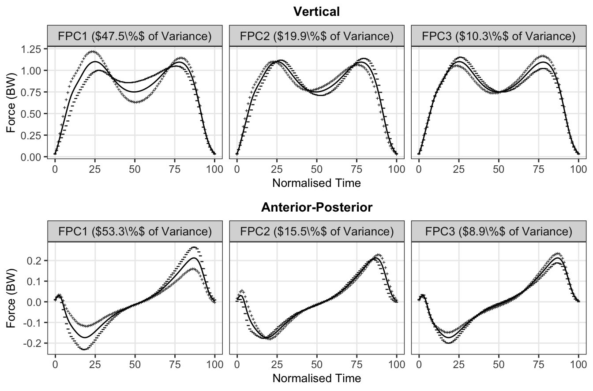
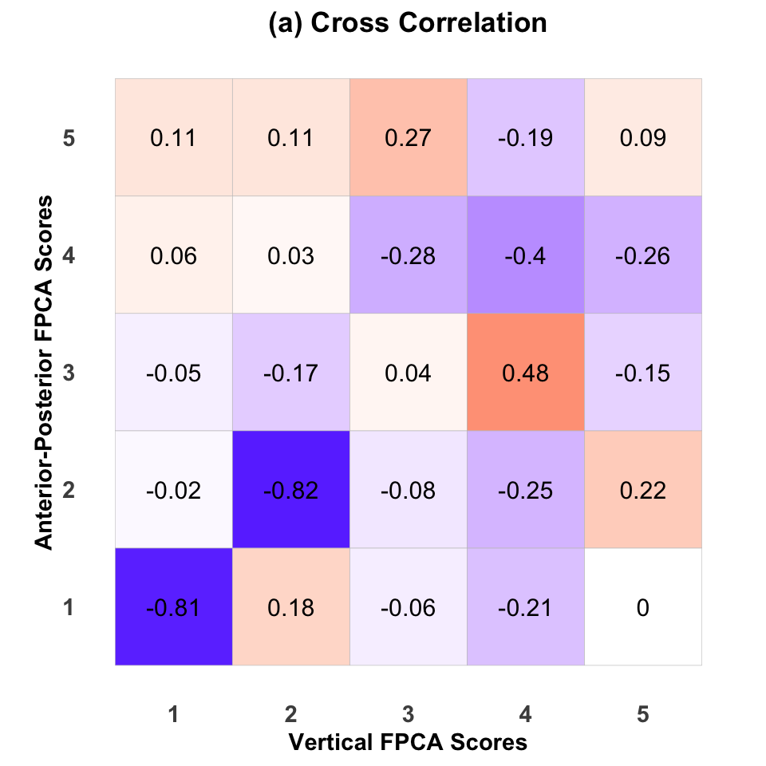
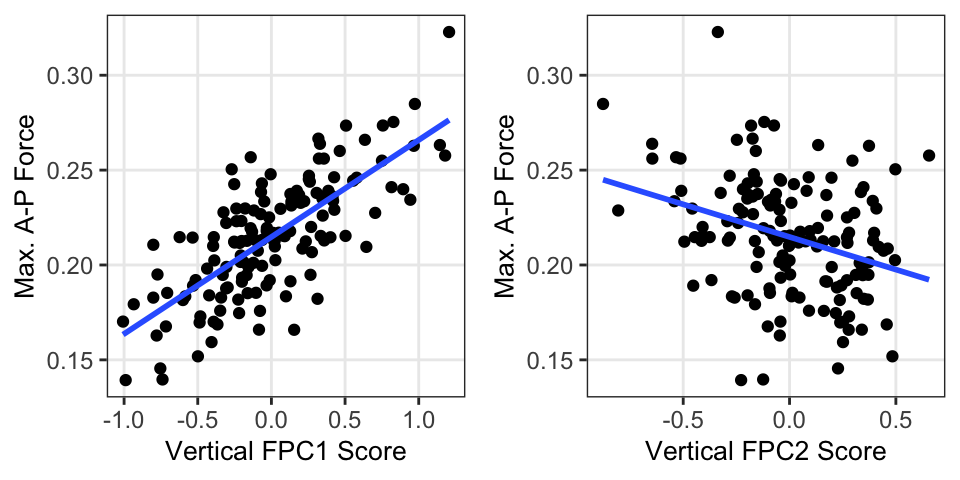
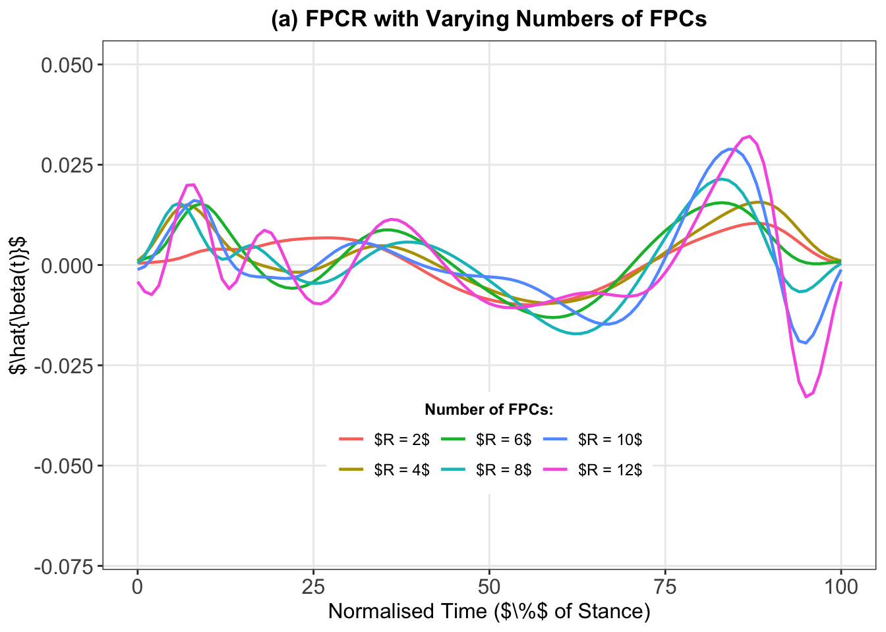
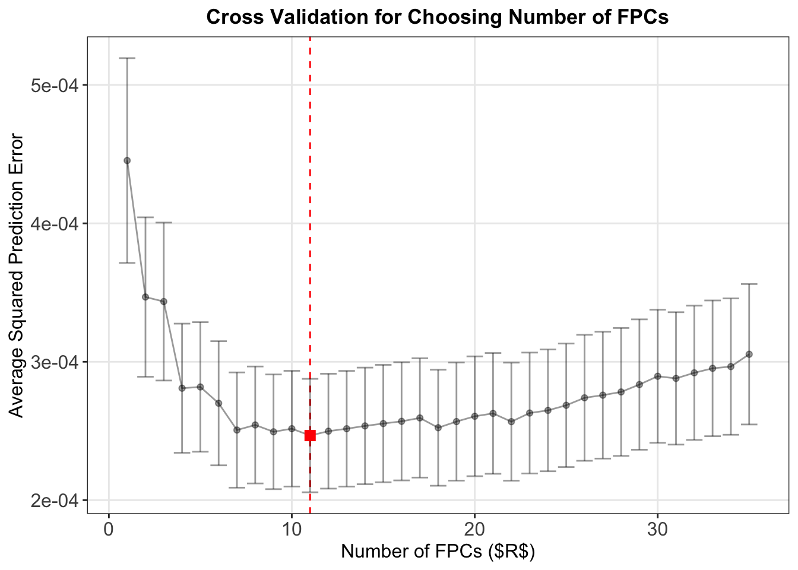
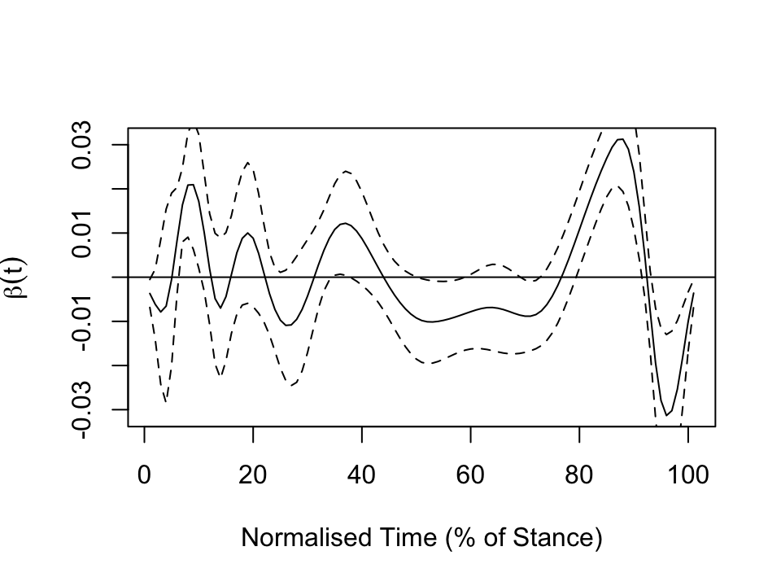
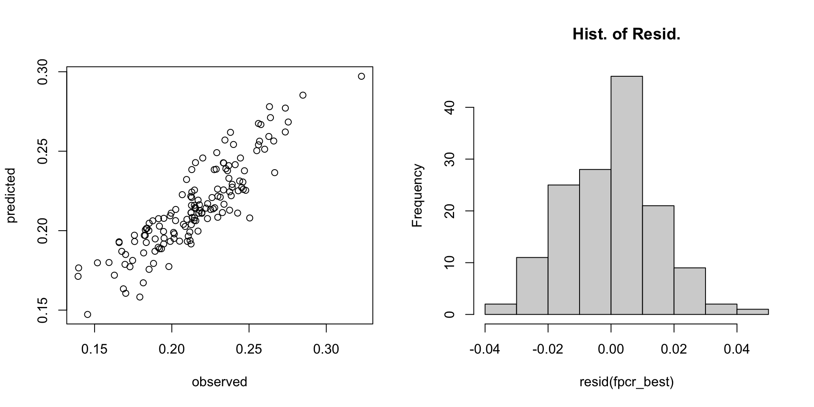
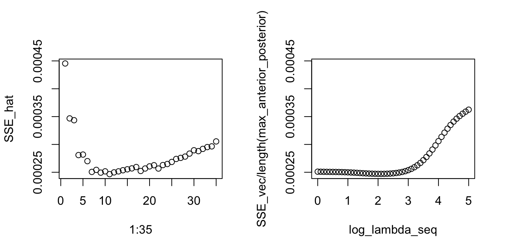
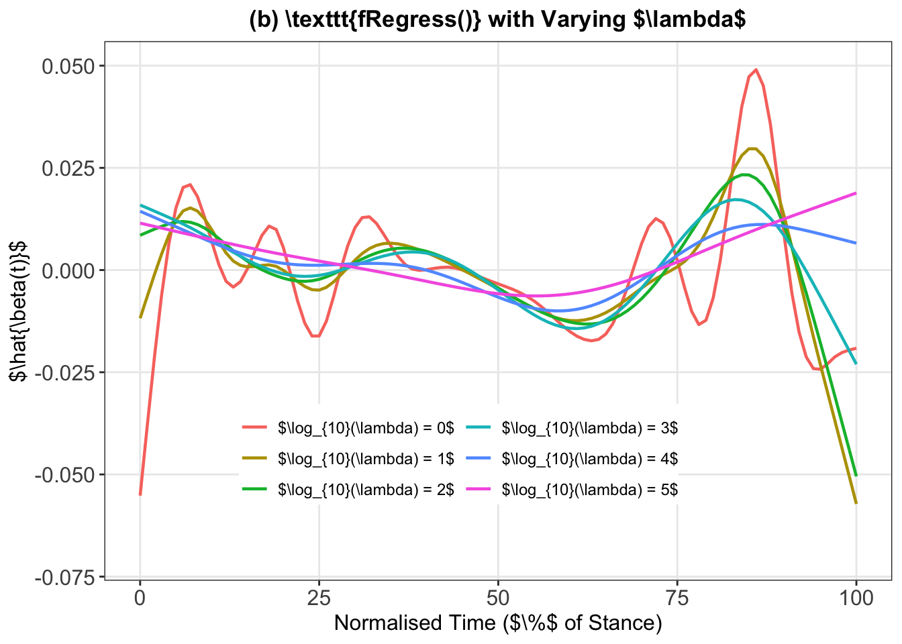
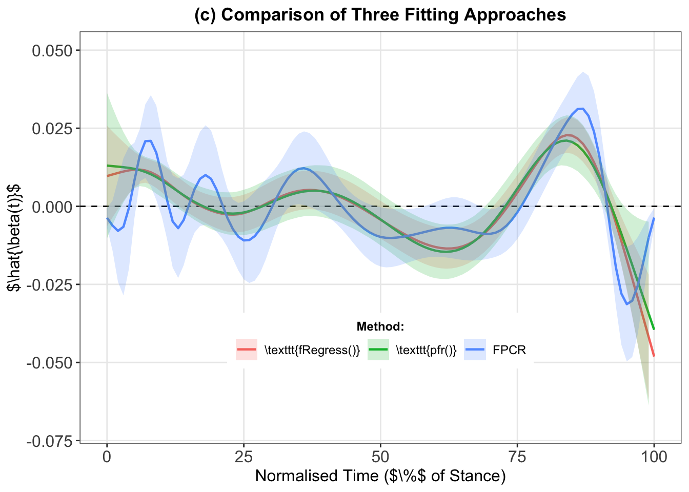

time_start <- Sys.time()Case Study Part 2: Healthy Controls
Analysis of healthy controls using FPCA and scalar-on-function regression.
Set Up
Packages.
library(tidyverse) # CRAN v1.3.1
library(data.table) # CRAN v1.14.2
library(fda) # CRAN v5.5.1
library(refund) # CRAN v0.1-26Some graphics settings.
source(here::here("functions", "theme_gunning.R"))
theme_gunning()
theme_update(strip.text = element_text(size = 10),
axis.text = element_text(size = 9),
axis.title = element_text(size = 10),
plot.title = element_text(size = 11))Load some other helper functions.
source(here::here("functions", "center_fd_around_new_mean.R"))
source(here::here("functions", "project_data_onto_fpcs.R"))Read in the data.
data_path <- here::here("chapter-06", "data", "interpolated-data.rds")
interpolated_data <- readRDS(data_path)
GRF_dataset_PRO_meta <- interpolated_data$GRF_dataset_PRO_meta
bspl_35 <- interpolated_data$bspl_35
GRF_dataset_PRO_meta[, uniqueN(SESSION_ID), by = SUBJECT_ID][, stopifnot(V1 == 1)]NULLCalculate unilateral average curves for each subject and force component:
GRF_dataset_PRO_meta[, paste0("time_",0:100) := NULL]
GRF_dataset_PRO_averages <- GRF_dataset_PRO_meta[,
as.list(apply(.SD, 2, mean)), # average basis coefficients of all trials
by = .(SUBJECT_ID, SESSION_ID, side, component, CLASS_LABEL, CLASS_LABEL_DETAILED, SEX, AGE, HEIGHT,
BODY_WEIGHT, BODY_MASS, SHOE_SIZE, AFFECTED_SIDE, SHOD_CONDITION, # defines averaging
ORTHOPEDIC_INSOLE, SPEED),
.SDcols = paste0("bspl4.",1:35)] # says which columns to averageIn this work, we focus on the Vertical and Anterior-Posterior force components. Focus on right side averages from healthy controls only. Construct fd objects from basis coefficients and basis.
averages_vertical <- GRF_dataset_PRO_averages[component == "vertical" & CLASS_LABEL == "HC" & side == "right"]
# create fd object defined by coefficients and basis object
fdobj_averages_vertical <- fd(coef = t(as.matrix(averages_vertical[, paste0("bspl4.",1:35)])),
basisobj = bspl_35)
averages_anterior_posterior <- GRF_dataset_PRO_averages[component == "anterior_posterior" & CLASS_LABEL == "HC" & side == "right"]
# create fd object defined by coefficients and basis object
fdobj_averages_anterior_posterior <- fd(coef = t(as.matrix(averages_anterior_posterior[, paste0("bspl4.",1:35)])),
basisobj = bspl_35)FPCA
Then perform FPCA using pca.fd()
# vertical:
fpca_averages_vertical <- pca.fd(fdobj = fdobj_averages_vertical,
nharm = 35)
# ap:
fpca_averages_anterior_posterior <- pca.fd(fdobj = fdobj_averages_anterior_posterior,
nharm = 35)Look at cumulative variance explained.
data.table(k = 1:10,
vertical = round(100 * cumsum(fpca_averages_vertical$varprop[1:10]), 2),
ap = round(100* cumsum(fpca_averages_anterior_posterior$varprop[1:10]), 2)) %>%
kableExtra::kable(caption = "Cumulative % of Variance Explained") %>%
kableExtra::kable_styling()| k | vertical | ap |
|---|---|---|
| 1 | 47.51 | 53.30 |
| 2 | 67.37 | 68.78 |
| 3 | 77.68 | 77.72 |
| 4 | 85.48 | 84.06 |
| 5 | 91.27 | 89.39 |
| 6 | 94.25 | 93.57 |
| 7 | 96.36 | 95.42 |
| 8 | 98.00 | 96.81 |
| 9 | 98.71 | 97.84 |
| 10 | 99.20 | 98.51 |
Gather and reshape data to do a nice plot of FPCs as perturbations of the mean function.
# Figure for Vertical: ----------------------------------------------------
vertical_fpcs_eval <- eval.fd(evalarg = 0:100, fpca_averages_vertical$harmonics)
vertical_fpcs_dt <- data.table(time = 0:100, vertical_fpcs_eval)
vertical_fpcs_dt_long <- melt.data.table(vertical_fpcs_dt, id.vars = "time", measure.vars = paste0("PC",1:35))
vertical_mean_dt <- data.table(time = 0:100, mean = c(eval.fd(0:100, fpca_averages_vertical$meanfd)))
vertical_fpcs_dt_long <- merge.data.table(x = vertical_fpcs_dt_long,
y = vertical_mean_dt,
by = "time",
all.x = TRUE)
vertical_var_explained_dt <- data.table(variable = paste0("PC", 1:35),
constant = (2 * sqrt(fpca_averages_vertical$values))[1:35], # to add to fpcs
var_explained = paste0("$", round(fpca_averages_vertical$varprop * 100, 1), "\\%$"))
vertical_fpcs_dt_long <- merge.data.table(x = vertical_fpcs_dt_long,
vertical_var_explained_dt,
by = "variable", all.x = TRUE)
vertical_fpcs_dt_long[, facet_label := paste0("F", variable, " (", var_explained, " of Variance)")]
vertical_plot <- ggplot(vertical_fpcs_dt_long[variable %in% paste0("PC", 1:3)]) +
aes(x = time) +
facet_wrap(~ facet_label, ncol = 3) +
geom_line(aes(y = mean)) +
geom_point(aes(y = mean + constant * value), pch = "+", size = 1.5) +
geom_point(aes(y = mean - constant * value), pch = "-", size = 3) +
labs(x = "Normalised Time", y = "Force (BW)", title = "Vertical")
# Figure for Anterior-Posterior: ----------------------------------------------------
anterior_posterior_fpcs_eval <- eval.fd(evalarg = 0:100, fpca_averages_anterior_posterior$harmonics)
anterior_posterior_fpcs_dt <- data.table(time = 0:100, anterior_posterior_fpcs_eval)
anterior_posterior_fpcs_dt_long <- melt.data.table(anterior_posterior_fpcs_dt, id.vars = "time", measure.vars = paste0("PC",1:35))
anterior_posterior_mean_dt <- data.table(time = 0:100, mean = c(eval.fd(0:100, fpca_averages_anterior_posterior$meanfd)))
anterior_posterior_fpcs_dt_long <- merge.data.table(x = anterior_posterior_fpcs_dt_long,
y = anterior_posterior_mean_dt,
by = "time",
all.x = TRUE)
anterior_posterior_var_explained_dt <- data.table(variable = paste0("PC", 1:35),
constant = (2 * sqrt(fpca_averages_anterior_posterior$values))[1:35], # to add to fpcs
var_explained = paste0("$", round(fpca_averages_anterior_posterior$varprop * 100, 1), "\\%$"))
anterior_posterior_fpcs_dt_long <- merge.data.table(x = anterior_posterior_fpcs_dt_long,
anterior_posterior_var_explained_dt,
by = "variable", all.x = TRUE)
anterior_posterior_fpcs_dt_long[, facet_label := paste0("F", variable, " (", var_explained, " of Variance)")]
anterior_posterior_plot <- ggplot(anterior_posterior_fpcs_dt_long[variable %in% paste0("PC", 1:3)]) +
aes(x = time) +
facet_wrap(~ facet_label, ncol = 3) +
geom_line(aes(y = mean)) +
geom_point(aes(y = mean + constant * value), pch = "+", size = 1.5) +
geom_point(aes(y = mean - constant * value), pch = "-", size = 3) +
labs(x = "Normalised Time", y = "Force (BW)", title = "Anterior-Posterior")
(combined_plot <- ggpubr::ggarrange(vertical_plot, anterior_posterior_plot, nrow = 2, ncol = 1))
Look at cross correlation between first two sets of FPC scores:
cross_cor_mat <- cor(fpca_averages_vertical$scores[,1:5],
fpca_averages_anterior_posterior$scores[,1:5])
cross_correlation <- ggcorrplot::ggcorrplot(corr = cross_cor_mat, lab = TRUE) +
labs(x = "Vertical FPCA Scores",
y = "Anterior-Posterior FPCA Scores",
colour = "Correlation",
title = "(a) Cross Correlation") +
theme_bw() +
theme(axis.title = element_text(face = "bold"),
panel.border = element_blank(),
legend.position = "none",
axis.text = element_text(face = "bold", size = 11),
panel.grid = element_blank(),
axis.ticks = element_blank(),
plot.title = element_text(face = "bold", hjust = 0.5)
)
cross_correlation
Look at how maximum AP force (discrete scalar variable) relates to vertical FPC scores.
Get maximum force first:
stopifnot(averages_anterior_posterior$SUBJECT_ID == averages_vertical$SUBJECT_ID)
max_anterior_posterior <- apply(eval.fd(0:100, fdobj_averages_anterior_posterior), 2, max)
vertical_fpca_scores <- fpca_averages_vertical$scoresAnd plot vs. FPC scores.
scores_and_max_dt <- data.table(max_anterior_posterior, vertical_fpca_scores)
p1 <- ggplot(data = scores_and_max_dt) +
aes(y = max_anterior_posterior, x = V1) +
geom_point() +
labs(y = "Max. A-P Force",
x = "Vertical FPC1 Score") +
stat_smooth(method = "lm", se = FALSE)
p2 <- ggplot(data = scores_and_max_dt) +
aes(y = max_anterior_posterior, x = V2) +
geom_point() +
labs(y = "Max. A-P Force",
x = "Vertical FPC2 Score") +
stat_smooth(method = "lm", se = FALSE)
(scores_vs_max_plot <- ggpubr::ggarrange(p1, p2, nrow = 2))`geom_smooth()` using formula = 'y ~ x'
`geom_smooth()` using formula = 'y ~ x'
Scalar-on-Function Regression
Now, let’s use the Vertical Curves to predict the (scalar/ discrete) Maximum Anterior-Posterior Force.
Update some graphics settings for this section.
theme_update(strip.text = element_text(size = 10),
axis.text = element_text(size = 12),
axis.title = element_text(size = 12),
plot.title = element_text(size = 13))Functional Principal Component Regression (FPCR) (lm())
Demo:
Use the FPC scores from the last step in a standard linear regression model to predict the max. AP force.
Let’s do it first using different numbers of FPCs, before choosing a “best” number to use:
# Do the multivariable linear regression:
# (manually using the fpc scores and lm() function)
fpcr <- lm(max_anterior_posterior ~ vertical_fpca_scores)
beta_stars <- fpcr$coefficients[-1] # Extract the weights of the coefficient function.
fpcr_reconstruction <- matrix(NA, nrow = 101, ncol = 35)
# NOTE: ONLY CAN DO THIS BECAUSE ORTHOGONALITY; DOESN'T WORK FOR E.G., SMOOTHED FPCS;
# because we'd have to fit a separate model for each k (multicollinearity)
vertical_fpcs_eval <- eval.fd(0:100, fpca_averages_vertical$harmonics) # evaluate the FPC basis functions on a grid.
for(k in 1:35) {
fpcr_reconstruction[, k] <- (vertical_fpcs_eval[, 1:k] %*% matrix(beta_stars[1:k], nrow = k, ncol = 1))[,1]
}
fpcr_reconstruction_dt <- data.table(time = 0:100, fpcr_reconstruction)
names(fpcr_reconstruction_dt)[-1] <- paste0("$R = ", 1:35, "$")
fpcr_reconstruction_dt_long <- melt.data.table(data = fpcr_reconstruction_dt,
id.vars = "time")
fpcr_plot <- ggplot(data = fpcr_reconstruction_dt_long[variable %in% paste0("$R = ", seq(2, 12, by = 2), "$")]) +
aes(x = time, y = value, group = variable, colour = variable) +
geom_line(linewidth = 0.8) +
labs(x = "Normalised Time ($\\%$ of Stance)",
y = "$\\hat{\\beta(t)}$",
title = "(a) FPCR with Varying Numbers of FPCs",
colour = "Number of FPCs:") +
theme(legend.position = c(0.5, 0.24),
legend.title = element_text(hjust = 0.5, face = "bold")) +
scale_y_continuous(limits = c(-0.07, 0.05)) +
guides(colour=guide_legend(nrow=2))
fpcr_plot
Cross-Validation
Use a cross-validation routine to choose number of FPCs to use:
Do Leave-One-Out (LOO) CV – no need to shuffle data beforehand. Code can be generalised to \(k\)-fold, but need to shuffle.
Writing CV manually using https://gist.github.com/duttashi/a51c71acb7388c535e30b57854598e77
Do a new FPCA and
lm()fit on each iteration – no data leakage
nfolds <- length(max_anterior_posterior)
folds <- cut(seq(1,length(max_anterior_posterior)),breaks=nfolds,labels=FALSE) # create folds
kmax <- 35
SSE_cv_mat <- matrix(NA, nrow = nfolds, ncol = kmax)
for(i in seq_len(nfolds)){
# print(paste("i =",i))
# get train data
testIndexes <- which(folds==i,arr.ind = TRUE)
# perform fpca on training
fpca_train <- pca.fd(fdobj = fdobj_averages_vertical[-testIndexes], nharm = kmax)
# construct training dataset for model fits
trainData <- data.frame(max_anterior_posterior = max_anterior_posterior[-testIndexes], fpca_train$scores)
names(trainData)[-1] <- paste0("PC", 1:kmax)
# get test functional data
fd_obj_test <- fdobj_averages_vertical[testIndexes]
# get test data fpc scores by centering around training mean and projecting onto training fpcs
fd_obj_test_cent <- center_fd_around_new_mean(fdobj = fd_obj_test, fpca_train$meanfd)
fpc_scores_test <- project_data_onto_fpcs(fdobj = fd_obj_test_cent, pca.fd_obj = fpca_train)
testData <- data.frame(max_anterior_posterior = max_anterior_posterior[testIndexes], fpc_scores_test)
names(testData)[-1] <- paste0("PC", 1:kmax)
for(k in 1:kmax) {
# print(paste("k =", k))
formula_k <- formula(paste0("max_anterior_posterior ~ ", paste(colnames(trainData)[-1][1:k], collapse = "+")))
lm_train <- lm(formula = formula_k, data = trainData)
yhat <- predict(lm_train, newdata = testData)
errors <- (testData[, "max_anterior_posterior"] - yhat)
SSE_cv_mat[i, k] <- sum(errors^2)
}
}Gather and plot results of CV:
SSE_hat <- apply(SSE_cv_mat, 2, mean)
SSE_se <- apply(SSE_cv_mat, 2, mean) / sqrt(nrow(SSE_cv_mat))
# plot(1:kmax, SSE_hat, ylim = range(SSE_hat - 2*SSE_se, SSE_hat + 2*SSE_se), type = "b", xlab = "k", ylab = "SSE")
# points(1:kmax, SSE_hat + 2*SSE_se, type = "b", col = "red", lty = 2, pch = 14)
# points(1:kmax, SSE_hat - 2*SSE_se, type = "b", col = "red", lty = 2, pch = 14)
(k_best <- which.min(SSE_hat))[1] 11(cv_plot <- ggplot(data.table(k = seq_len(35),
SSE_hat = SSE_hat,
SSE_lower = SSE_hat + 2*SSE_se,
SSE_upper = SSE_hat - 2*SSE_se)) +
aes(x = k, y = SSE_hat) +
geom_vline(xintercept = k_best, lty = 2, col = "red") +
geom_line(alpha = 0.4) +
geom_errorbar(aes(ymin = SSE_lower, ymax = SSE_upper), alpha = 0.4) +
geom_point(alpha = 0.4) +
geom_point(data = . %>% filter(k == k_best), colour = "red", size = 3, pch = 15) +
labs(x = "Number of FPCs ($R$)",
y = "Average Squared Prediction Error",
title = "Cross Validation for Choosing Number of FPCs"))
Do fit on full data with chosen \(R=11\).
df_fpcr <- data.frame(max_anterior_posterior = max_anterior_posterior,
vertical_fpca_scores[, 1:11])
colnames(df_fpcr)[-1] <- paste0("vertical_fpca_scores", 1:11)
formula_fpcr <- formula(paste("max_anterior_posterior ~", paste(paste0("vertical_fpca_scores", 1:11), collapse = " + "), collapse = ""))
fpcr_best <- lm(formula = formula_fpcr, data = df_fpcr)And get confidence intervals using:
fpcr_beta_best <-(vertical_fpcs_eval[, 1:k_best] %*% matrix(fpcr_best$coefficients[-1], nrow = k_best, ncol = 1))[,1]
fpcr_beta_se_best <- sqrt(diag(vertical_fpcs_eval[, 1:k_best] %*% vcov(fpcr_best)[-1,-1] %*% t(vertical_fpcs_eval[, 1:k_best])))Rough plot of estimated coefficient function \(\beta(t)\) and CIs:
plot(fpcr_beta_best, type = "l", xlab = "Normalised Time (% of Stance)", ylab = expression(beta(t)))
abline(h=0)
lines(fpcr_beta_best - 2 * fpcr_beta_se_best, lty = 2)
lines(fpcr_beta_best + 2 * fpcr_beta_se_best, lty = 2)
Some quick diagnostic plots for linear model:
par(mfrow = c(1, 2))
plot(x = max_anterior_posterior, y = predict(fpcr_best), ylab = "predicted", xlab = "observed")
hist(resid(fpcr_best), main = "Hist. of Resid.")
fRegress()
Represent \(\beta(t)\) using a spline basis and a roughness penalty using fRegress().
Some notes:
We do LOO-CV using built in function
fRegress.CV(). Requires scalar parameters be set up as a “function” with a constant basis.Use same basis of \(35\) B-splines for \(\beta(t)\), integrated squared second derivative penalty (see
Lfdobj = 2).
# Need to create constant fd object for scalar predictor to work in fRegress.CV(), weird, I know.
constant_basis <- create.constant.basis(c(0,100))
constant_fd <- fd(coef = matrix(1, nrow = 1, ncol = ncol(fdobj_averages_vertical$coefs)), basisobj = constant_basis)
# List containing predictors (jntercept and functional covariate)
xfd_list <- list(constant_fd, # for intercept
fdobj_averages_vertical) # functional coefficient
log_lambda_seq <- seq(0, 5, by = 0.1)
# Let's store out of samples predictions errrors:
SSE_vec <- vector("numeric", length = length(log_lambda_seq))
# Cross-Validation Loop:
for(i in seq_along(log_lambda_seq)) {
# print(paste0("Iteration ", i, " of ", length(log_lambda_seq)))
# set up fdPar with value of lambda for this iteration:
beta_list <- list(fdPar(create.constant.basis(c(0,100))), # for intercept
fdPar(fdobj = bspl_35, Lfdobj = 2, lambda = 10^log_lambda_seq[i])) # for functional coefficient
# LOO-CV:
CV_fit_i <- fRegress.CV(y = max_anterior_posterior,
xfdlist = xfd_list,
betalist = beta_list)
# Store Result:
SSE_vec[i] <- CV_fit_i$SSE.CV
}Choose best \(\lambda\) based on CV:
(log_lamba_best <- log_lambda_seq[which.min(SSE_vec)])[1] 2.1Look at difference in CV estimates for FPCR and fRegress() – the smoothing penalty approach varies much more smoothly!
par(mfrow = c(1, 2))
plot(1:35, SSE_hat, ylim = range(SSE_hat, SSE_vec/ length(max_anterior_posterior)))
plot(log_lambda_seq, SSE_vec/ length(max_anterior_posterior), ylim = range(SSE_hat, SSE_vec/ length(max_anterior_posterior)))
Do model fit on full dataset using best smoothing parameter:
beta_list_best <- list(fdPar(create.constant.basis(c(0,100))), # for intercept
fdPar(fdobj = bspl_35, Lfdobj = 2, lambda = 10^log_lamba_best)) # for functional coefficient
# cv:
fRegress_best_fit <- fRegress(y = max_anterior_posterior,
xfdlist = xfd_list,
betalist = beta_list_best)Get confidence intervals for model fit (note we have conditioned on our “best” \(\lambda\)):
Based on Ramsay, Hooker and Graves pp.140-141.
N <- length(max_anterior_posterior)
max_anterior_posterior_hat <- fRegress_best_fit$yhatfdobj[,1]
resid <- max_anterior_posterior - max_anterior_posterior_hat
SigmaE <- sum(resid^2)/(N- fRegress_best_fit$df)
SigmaE <- SigmaE*diag(rep(1,N))
y2cMap <- smooth.basis(argvals = 0:100, y = eval.fd(0:100, fdobj_averages_vertical[1]), fdParobj = bspl_35)$y2cMap # didn't have smooth.basis stored.
fRegress_best_fit_stderrList <- fRegress.stderr(y = fRegress_best_fit,
y2cMap = y2cMap,
SigmaE = SigmaE)And a nice plot to show what happend when we vary lambda:
# Let's do a plot of varying lambda: --------------------------------------
fregress_varying_lambda_log_lambda_grid <- seq(0, 5, by = 1)
fregress_varying_lambda_beta_mat <- matrix(NA, nrow = 101, ncol = length(fregress_varying_lambda_log_lambda_grid))
for(i in seq_along(fregress_varying_lambda_log_lambda_grid)) {
beta_list <- list(fdPar(create.constant.basis(c(0,100))), # for intercept
fdPar(fdobj = bspl_35, Lfdobj = 2, lambda = 10^fregress_varying_lambda_log_lambda_grid[i])) # for functional coefficient
fregress_i <- fRegress(y = max_anterior_posterior,
xfdlist = xfd_list,
betalist = beta_list)
fregress_varying_lambda_beta_mat[,i] <- c(eval.fd(0:100, fregress_i$betaestlist[[2]]$fd))
}
fregress_varying_lambda_dt <- data.table(time = 0:100, fregress_varying_lambda_beta_mat)
names(fregress_varying_lambda_dt)[-1] <- paste0("$\\log_{10}(\\lambda) = ", fregress_varying_lambda_log_lambda_grid, "$")
fregress_varying_lambda_dt <- melt.data.table(data = fregress_varying_lambda_dt,
id.vars = "time")
fregress_varying_lambda_plot <- ggplot(data = fregress_varying_lambda_dt) +
aes(x = time, y = value, group = variable, colour = variable) +
geom_line(linewidth = 0.8) +
labs(x = "Normalised Time ($\\%$ of Stance)",
y = "$\\hat{\\beta(t)}$",
title = "(b) \\texttt{fRegress()} with Varying $\\lambda$",
colour = "$\\log_{10}(\\lambda)$") +
scale_y_continuous(limits = c(-0.07, 0.05)) +
theme(legend.position = c(0.45, 0.235),
legend.margin = margin(t=0, b=0),
legend.title = element_blank()) +
guides(colour=guide_legend(nrow=3))
fregress_varying_lambda_plot 
pfr()
With pfr() it is really simple. We need to feed in the functional predictor evaluated on a grid (note: manual says that we can supply fd object). For now, we just evaluate at \(0,1,2\dots,100\):
lf()specifies a linear functional predictor of the form \(\int x(t) \beta(t) \mathrm{d}t\).Use
bs = "bs"for a “B-spline basis with integrated squared derivative penalties” (see?mgcv::smooth.termsfor details).
vertical_fd_eval <- t(eval.fd(evalarg = 0:100, fdobj = fdobj_averages_vertical))
pfr <- pfr(max_anterior_posterior ~ lf(X = vertical_fd_eval, bs = "bs", k = 35, argvals = 0:100))Comparison of three fitting approaches
Estimates of \(\beta(t)\)
best_estimates_dt <- data.table(time = 0:100,
pfr = c(coef(pfr)[, "value"]),
fpcr = fpcr_beta_best,
fregress = c(eval.fd(0:100, fRegress_best_fit$betaestlist[[2]]$fd)))
best_estimates_se_dt <- data.table(time = 0:100,
pfr = c(coef(pfr)[, "se"]),
fpcr = fpcr_beta_se_best,
fregress = c(eval.fd(0:100, fRegress_best_fit_stderrList$betastderrlist[[2]])))
best_estimates_dt_lng <- melt.data.table(data = best_estimates_dt,
id.vars = "time",
value.name = "point_est")
best_estimates_se_dt_lng <- melt.data.table(data = best_estimates_se_dt,
id.vars = "time",
value.name = "se")
plot_dt <- merge.data.table(best_estimates_dt_lng,
best_estimates_se_dt_lng,
by = c("variable", "time"))
plot_dt[, lower := point_est - 2 * se]
plot_dt[, upper := point_est + 2 * se]
plot_dt[, method := fcase(
variable == "pfr", "\\texttt{pfr()}",
variable == "fregress", "\\texttt{fRegress()}",
variable == "fpcr", "FPCR"
)]
best_estimates_plot <- ggplot(data = plot_dt) +
aes(x = time, y = point_est, group = method, colour = method, fill = method) +
geom_hline(yintercept = 0, lty = 2) +
geom_line(linewidth = 0.8) +
theme(legend.position = c(0.5, 0.25),
legend.title = element_text(hjust = 0.5, face = "bold")) +
geom_ribbon(mapping = aes(ymin = lower, ymax = upper), alpha = 0.2,
colour = NA) +
scale_y_continuous(limits = c(-0.07, 0.05)) +
labs(x = "Normalised Time ($\\%$ of Stance)",
y = "$\\hat{\\beta(t)}$",
title = "(c) Comparison of Three Fitting Approaches",
colour = "Method:",
fill = "Method:") +
guides(colour=guide_legend(nrow=1))
best_estimates_plot
In-Sample Goodness of Fit
Get \(R^2\) values from each model. Note \(R^2\) for fRegress() based on Ramsay, Hooker and Graves p. 134.
# Print R-squared:
print(paste0("FPCR: ", 100 * round(summary(fpcr_best)$r.squared, 2), "%"))[1] "FPCR: 78%"print(paste0("pfr: ", 100 * round(summary(pfr)$r.sq, 2), "%"))[1] "pfr: 76%"# From RHG p.134
SSE1.1 <- sum(resid^2)
SSE0 <- sum((max_anterior_posterior - mean(max_anterior_posterior))^2)
RSQ1 = (SSE0-SSE1.1)/SSE0
print(paste0("fRegress: ", 100 * round(RSQ1, 2), "%"))[1] "fRegress: 78%"References
- James O.. Ramsay, Giles Hooker, and Spencer Graves. Functional Data Analysis with R and MATLAB. USA: Springer, 2009.